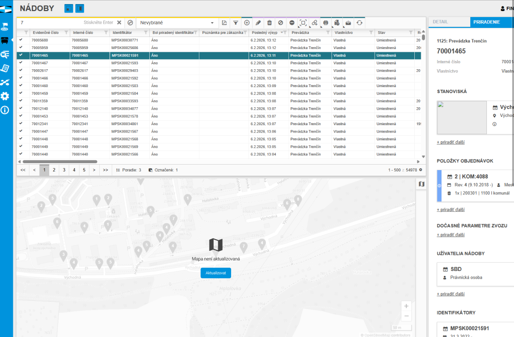

Stručný popis, cíl
Cílem případu užití je zobrazení mapy Nádob (přesněji k nádobám přiřazených Stanovišť). Na základě uživatelských oprávnění systém uživateli zpřístupní volání dílčích funkčností.
Poznámka: V mapě zobrazujeme Stanoviště, která jsou k dnešnímu dni přiřazena k Nádobám specifikovaným na vstupu UC. Tomu odpovídá i dále uvedený popis, pracujeme se Stanovišti!
Seznam aktérů
| Aktér | Poznámka |
|---|---|
| Uživatel | – |
Poznámka: Úplný přehled aktérů je zobrazen samostatně, viz .
Spuštění případů užití
Uživatel zadá požadavek na zobrazení mapy nádob, a to jedním z uvedených způsobů:
Vstupní podmínky
Ke spuštění případu užití jsou nutná následující oprávnění na typ entit (viz Uživatelská oprávnění a role):
- Alespoň jedno z uvedených oprávnění: Nádoby - zobrazení, Nádoby - modifikace.
- Alespoň jedno z uvedených oprávnění: Stanoviště - zobrazení, Stanoviště - modifikace.
- Aktivní mapa na obrazovce nádob
- Počet nádob v přehledu je menší jak "containerCount" dle Konfigurační parametry
- jinak AF2
Vstupní data
| Vstupní parametr | Datový typ | Povinnost | Popis | Poznámka |
|---|---|---|---|---|
| Specifikace zobrazených nádob | – | Ano | Kritéria, podle kterých jsou načítány jednotlivé Nádoby. | Jedná se o specifikaci jednotlivých kritérií, podle kterých jsou vyhodnocovány načítané Nádoby. Může to být určení konkrétní Provozovny, požadavek na pouze aktivní záznamy, aplikace filtru na evidenční číslo Nádoby, ale i specifikace, že nás zajímají pouze Nádoby s přiřazeným Stanovištěm na požadované adrese. Obvykle se pak jedná o informaci, kterou má k dispozici nadřazený UC, který mapu používá. Vzhledem k tomu, že není v rámci mapy použito stránkování, se může počet načtených záznamů výrazně lišit např. oproti „propojené“ tabulce. Pro mapu však není nutné načítat všechny informace o Nádobě (respektive přiřazeném Stanovišti), ve většině případů si vystačíme s identifikátorem a polohou. Z toho důvodu by nebylo rozumné načítat data společně v nadřazeném UC – pro mapu a tabulku zároveň a ve stejném rozsahu (dalším rozměrem je množství dat, se kterým musíme u Nádob počítat). Doplňující informace o Nádobě či přiřazeném Stanovišti pak můžeme získat až ve chvíli, kdy budou opravdu potřeba (např. zobrazení kontextové nápovědy). |
Základní tok událostí
- Systém zobrazí mapu nádob (viz Uživatelské rozhraní).
- pokud není hlavní mapa aktivovaná, tak k načítání údajů do mapy nedochází
- Systém načte takové Nádoby, které splňují všechny dále uvedené podmínky zároveň:
- Nádoba odpovídá na vstupu získané specifikaci (vstupní parametr Specifikace zobrazených nádob).
- Systém detekuje, že počet nádob z zobrazení je menší jak ContainerCount (nadefinován v Konfigurační parametry).
- Pro všechny nalezené Nádoby:
- Systém nalezne takové Přiřazení nádoby ke stanovišti, které splňuje všechny dále uvedené podmínky zároveň (mělo by být nalezeno maximálně jedno Přiřazení nádoby ke stanovišti):
Atribut Je aktivní nabývá hodnoty TRUE.
Hodnota atributu Nádoba se odkazuje na právě zkoumanou Nádobu.
- Hodnota atributu Datum přistavení je menší nebo rovno aktuálnímu datu a času.
- Hodnota atributu Datum stažení je větší než nebo rovna aktuální datum a čas (pokud není hodnota k dispozici, není podmínka vyhodnocována).
- Pokud je nalezeno Přiřazení nádoby ke stanovišti, systém vyhodnotí obsažené Stanoviště (atribut Stanoviště):
- Pokud je hodnota atributu Souřadnice k dispozici:
- Systém vykreslí právě zkoumané Stanoviště v mapě.
- Jinak: přechod na krok 3 (Stanoviště není možné vykreslit v mapě).
- Pokud je hodnota atributu Souřadnice k dispozici:
- Jinak: přechod na krok 3 (Stanoviště není k dispozici).
- Systém nalezne takové Přiřazení nádoby ke stanovišti, které splňuje všechny dále uvedené podmínky zároveň (mělo by být nalezeno maximálně jedno Přiřazení nádoby ke stanovišti):
- Systém zpřístupní dostupné funkčnosti.
Poznámka:
- Stanoviště jsou načítána pouze v nutném rozsahu (identifikátor a souřadnice). Tomu odpovídají i informace dostupné na výstupu UC.
- Aktuálně nejsou načítaná Stanoviště omezena právě zobrazeným výřezem mapy.
Alternativní toky události
AF1: Aktivace panelu mapy až po načtení nádob
- Uživatel nemá aktivní hlavní mapu
- Proběhne 400UC06: Zobrazit přehled nádob
- Uživatel aktivuje mapy
- systém pokračuje od bodu 3 Základní tok událostí
AF2: Načtení údajů do mapy u vyššího počtu nádob v přehledu
- Systém zobrazí mapu nádob (viz Uživatelské rozhraní).
- Systém načte takové Nádoby, které splňují všechny dále uvedené podmínky zároveň:
- Nádoba odpovídá na vstupu získané specifikaci (vstupní parametr Specifikace zobrazených nádob).
- Systém detekuje, že počet nádob z zobrazení je větší nebo rovno jak ContainerCount (nadefinován v Konfigurační parametry).
- V mapě se zobrazí dlaždice s informací, že uživatel musí dát pokyn k načtení údajů do mapy.
- Uživatel potvrdí načtení.
- Pro všechny nalezené Nádoby:
- Systém nalezne takové Přiřazení nádoby ke stanovišti, které splňuje všechny dále uvedené podmínky zároveň (mělo by být nalezeno maximálně jedno Přiřazení nádoby ke stanovišti):
Atribut Je aktivní nabývá hodnoty TRUE.
Hodnota atributu Nádoba se odkazuje na právě zkoumanou Nádobu.
- Hodnota atributu Datum přistavení je menší nebo rovno aktuálnímu datu a času.
- Hodnota atributu Datum stažení je větší než nebo rovna aktuální datum a čas (pokud není hodnota k dispozici, není podmínka vyhodnocována).
- Pokud je nalezeno Přiřazení nádoby ke stanovišti, systém vyhodnotí obsažené Stanoviště (atribut Stanoviště):
- Pokud je hodnota atributu Souřadnice k dispozici:
- Systém vykreslí právě zkoumané Stanoviště v mapě.
- Jinak: přechod na krok 3 (Stanoviště není možné vykreslit v mapě).
- Pokud je hodnota atributu Souřadnice k dispozici:
- Jinak: přechod na krok 3 (Stanoviště není k dispozici).
- Systém nalezne takové Přiřazení nádoby ke stanovišti, které splňuje všechny dále uvedené podmínky zároveň (mělo by být nalezeno maximálně jedno Přiřazení nádoby ke stanovišti):
- Systém zpřístupní dostupné funkčnosti.
Výjimkové toky událostí
–
Ukončení případu užití
Výstupní podmínky
Uživateli byla zobrazena mapa Nádob (respektive přiřazených Stanovišť), ve které dostupné funkce odpovídají jeho uživatelským oprávněním.
Výstupní data
–
Algoritmy
–
Validace
–
Uživatelské rozhraní
Použitá mapa je založena na obecné mapě (viz Mapa), tomu odpovídá i její chování (k dispozici je např. pouze základní nastavení mapy – mapový podklad a jeho barevnost).
V rámci mapy jsou načtena Stanoviště, která odpovídají na vstupu získané specifikaci Nádob (viz Základní tok událostí). Zvýrazněna jsou pak právě označená Stanoviště. Vykreslena jsou následovně:
- Zobrazení stanoviště: ikona ra-location.
- Barva označeného stanoviště: defaultColor, viz Použité barvy.
- Barva stanoviště: mapDefaultSiteColor, viz Použité barvy.
- Pokud je Stanoviště v rámci mapy zobrazeno duplicitně, je k dispozici i počet jeho výskytů (viz Počet duplicitních stanovišť).
Shlukování
Nastavení mapy se pak v některých ohledech liší od výchozího stavu (obecná mapa, viz Mapa). Konkrétně se jedná o možnost zobrazení shluků, která je povolena. Jejich specifikace je následující:
- Zobrazení shluku – grafická podoba je dána použitou komponentou.
- Použití shluku – vyhodnocení, zda má být zobrazen shluk, je dáno použitou komponentou. Zobrazení shluku je potlačeno od úrovně přiblížení mapy sitesClusterMapZoomLevel, viz Konfigurační parametry.
- Kliknutí na shluk – dojde k přiblížení mapy a jejímu vycentrování na Stanoviště obsažená ve shluku.
- Funkce Spiderfy není povolena.
- Pro shluk není k dispozici Detail stanoviště v mapě.
Dále je pak uveden náhled mapy v případě, kdy jsou pro vykreslení Stanovišť použity shluky.

Knihovna H3geo
Při spuštění AF2: Načtení údajů do mapy u vyššího počtu nádob v přehledu s počtem nádob > 150000 tak dojde ke změně knihovny pro shlukování (H3geo)

K vykreslení mapy dochází především při impulsu z nadřízeného UC – došlo ke změně specifikace načítaných Nádob, podle kterých jsou vykreslována Stanoviště, případně se změnila množina dostupných Nádob (vytvoření, editace, odebrání).
Poznámka: Vzhledem k tomu, že není při načítání Stanovišť vyhodnocován právě zobrazený výřez mapy, není nutné opětovně načítat data např. při jejím přiblížení.
Vykreslení mapy probíhá následovně:
- Systém zruší vykreslení právě zobrazených Stanovišť v mapě.
- Systém vykreslí Stanoviště, která odpovídají na vstupu získané specifikaci Nádob (viz Základní tok událostí), použita je Barva stanoviště.
- Systém vycentruje mapu tak, aby byla vidět všechna zobrazená Stanoviště (může dojít i k přiblížení mapy, dostupná měřítka při této akci jsou 50 m a více).
Poznámka: Pro vykreslená Stanoviště je k dispozici bublinková nápověda. Její struktura je uvedena samostatně (viz Detail stanoviště v mapě). K zobrazení dochází po najetí myší na konkrétní Stanoviště, a to po uplynutí určité prodlevy (tooltipDisplayDelay, viz Konfigurační parametry). Zobrazení těchto informací je potlačeno od úrovně přiblížení mapy sitesClusterMapZoomLevel, viz Konfigurační parametry.
Drátový diagram

Přehled UI komponent
| Callout | Prvek | Popis | Poznámka |
|---|---|---|---|
| 1 | Nástrojová lišta | Aktuálně je použita pouze výchozí nástrojová lišta (viz Mapa). | Další nastavení mapy zatím nejsou implementována. |
| 2 | Neoznačené stanoviště | Znázornění polohy Stanoviště v případě, kdy není označeno. | Pokud je některé ze Stanovišť načteno duplicitně, je zobrazen počet takto načtených Stanovišť (odpovídá počtu obsažených Nádob). |
| 3 | Označené stanoviště | Znázornění polohy Stanoviště v případě, kdy je označeno. | Pokud je některé ze Stanovišť načteno duplicitně, je zobrazen počet takto načtených Stanovišť (odpovídá počtu obsažených Nádob). |
Chování
Označení stanoviště
V rámci mapy není možné provést označení Stanoviště (ani odpovídající Nádoby).
Počet duplicitních stanovišť
Jednotlivá Stanoviště jsou načítána dle na vstupu získané specifikace Nádob. Může se tedy stát, že je jedno Stanoviště zobrazeno v mapě vícekrát. V takovém případě je pak při vykreslení Stanoviště doplněna informace o počtu duplicitně vykreslených Stanovišť (odpovídá počtu Nádob na Stanovišti, které odpovídají specifikaci získané na vstupu). Uvedené chování má své důvody, cílem je například to, aby byl v rámci shluků zobrazen skutečný počet zobrazených Nádob, nikoliv Stanovišť (a to bez úpravy nativního chování použité komponenty). Způsob, jakým jsou Stanoviště z tohoto pohledu vykreslována, je uveden v tabulce.
Poznámka: Uvedená informace je zobrazována až od určité úrovně přiblížení mapy (sitesClusterMapZoomLevel, viz Konfigurační parametry).
| Podmínka | Náhled | Způsob vykreslení |
|---|---|---|
| Konkrétní Stanoviště má být vykresleno právě jednou. |
Poznámka: Nové je i v tomto případě zobrazen počet. | Stanoviště je vykresleno běžným způsobem. |
| Konkrétní Stanoviště má být vykresleno více jak jednou. |  | V rámci Stanoviště je zobrazen počet vykreslení tohoto Stanoviště, viz Nádoby na stanovišti. |

Detail stanoviště v mapě
Detail Stanoviště v mapě je zobrazován ve formě kontextové nabídky, tomu odpovídá také samotné chování (viz 101UC15: Zobrazit kontextovou nápovědu). Jako vstupní hodnota je předána konkrétní instance Stanoviště.
Poznámka: Uvedená informace je zobrazována až od určité úrovně přiblížení mapy (sitesClusterMapZoomLevel, viz Konfigurační parametry).
Drátový diagram

Přehled UI komponent
| Callout | Komponenta | Nadpis | Typ komponenty | Příklad hodnoty | Hodnota | Výchozí hodnota | Formát | Bublinková nápověda | Zpřístupněná | Viditelná | Chování | Validace | Poznámka |
|---|---|---|---|---|---|---|---|---|---|---|---|---|---|
| 1 | Adresa stanoviště | Adresa | Label | Železničního pluku 118/A, 530 03 Pardubice | Entita Stanoviště. | – | Zobrazená hodnota je v uvedeném formátu: Úplná adresa. | – | – | Vždy | – | – | – |
| 2 | Nádoby na stanovišti | Nádoby (
| Label | 12000258 (cizí) | Plast | Entita Nádoba. | – | Každá z dostupných Nádob je zobrazena na samostatném řádku. Maximální počet Nádob zobrazených v nabídce je omezen. Pokud dojde k jeho překročení, je zobrazen zástupný znak „…“ a zbývající Nádoby nejsou v nabídce zobrazeny (viz drátový diagram).
Uvedené chování nemá vliv na počet Nádob zobrazený v nadpisu položky. | – | – | Vždy | – | – | Zobrazené Nádoby na Stanovišti odpovídají specifikaci získané na vstupu UC. |
Nádoby na stanovišti
K jednomu Stanovišti může být v jeden čas přiřazeno i několik Nádob. V rámci kontextové nabídky Stanoviště (viz Detail stanoviště v mapě) výčet takových Nádob zobrazujeme. Přiřazené Nádoby je pak možné získat pomocí vazby Přiřazení nádoby ke stanovišti. V první řadě tedy nalezneme taková Přiřazení nádoby ke stanovišti , která splňují všechny dále uvedené podmínky zároveň:
Atribut Je aktivní nabývá hodnoty TRUE.
Hodnota atributu Stanoviště se odkazuje na právě zkoumané Stanoviště.
- Hodnota atributu Datum přistavení je menší nebo rovno aktuálnímu datu a času.
- Hodnota atributu Datum stažení je větší než nebo rovna aktuální datum a čas (pokud není hodnota k dispozici, není podmínka vyhodnocována).
Nalezená Přiřazení nádoby ke stanovišti obsahují odkaz na požadované Nádoby (atribut Nádoba). Získané nádoby jsou pak dále filtrovány následovně:
- Nádoba odpovídá na vstupu získané specifikaci (vstupní parametr Specifikace zobrazených nádob).
Poznámka: Nádoby jsou předány abecedně seřazeny dle hodnoty atributu Evidenční číslo, a to vzestupně.
Formát nádoby na stanovišti
Formát, ve kterém jsou jednotlivé Nádoby zobrazeny, se může lišit dle několika aspektů:
- Atribut Vlastnictví nabývá hodnoty Cizí (viz Vlastnictví nádoby):
- Je k dispozici hodnota atributu Skupina odpadu:
( ) | - Jinak:
( )
- Je k dispozici hodnota atributu Skupina odpadu:
- Jinak:
- Je k dispozici hodnota atributu Skupina odpadu:
| - Jinak:
- Je k dispozici hodnota atributu Skupina odpadu:
Uživatelská nastavení
V rámci prvku je použito . Prvky, u kterých je ukládáno uživatelské nastavení, jsou uvedeny ve formě tabulky. Jejich výchozí hodnota pak odpovídá popisu uživatelského rozhraní.
Poznámka: Mapa může být použita v rámci více UC, proto je její uživatelské nastavení ukládáno na úrovni nadřazeného UC. Rozsah ukládaných informací je pak dán dále uvedenou tabulkou.
| Funkční celek | Ukládaná hodnota | Poznámka |
|---|---|---|
| Mapa | Viz Uživatelská nastavení mapy (bez další specifikace). | – |
Parametry URL
–
Grafický návrh

Grafický návrh k AF2
| Varianta A - vynucení načtení |
|---|
|  |
Uživateli se zobrazí v tabulce více jak 10.000 nádob. Mapa se zobrazí jasná informace, že k načtení údajů nádob do mapy je nutné stisknout tlačítko. Výhodou je, že "nutíme" uživatele, aby uživatel pracoval s konzistentními daty na straně tabulky a mapy. Po každé změně filtrování a počtu nádob na 10.000 se mapa zobrazí ve stavu k aktualizaci. Text "Aktualizovat" bude červeným písmem. |
Revize
8.2.2026: Vladislav Findejs
| Odkaz | Stručný popis změny |
|---|---|
| Základní tok událostí | Revize způsobu vyhodnocení platnosti (naznačeno červeně). |
| Načítání údajů do mapy jen při aktivní mapě. | |
| Aktivace mapy po načtení nádob do tabulky. | |
| Změna knihovny pro shlukování | |
| Zobrazení mapy s volbou načtení údajů |
19. 4. 2024: Tomáš Nadrchal
| Odkaz | Stručný popis změny |
|---|---|
| Základní tok událostí | Revize způsobu vyhodnocení platnosti (naznačeno modře). |
| Nádoby na stanovišti | Revize způsobu vyhodnocení platnosti (naznačeno modře). |
3. 3. 2023: Tomáš Nadrchal
| Odkaz | Stručný popis změny |
|---|---|
| Detail stanoviště v mapě | Revize zobrazení kontextové nápovědy (naznačeno modře). |
7. 2. 2022: Tomáš Nadrchal
| Odkaz | Stručný popis změny |
|---|---|
| Počet duplicitních stanovišť | Revize zobrazení počtu duplicitních stanovišť (naznačeno modře), viz změnové požadavky č. 57 (viz Rozvojové požadavky). |
20. 8. 2021: Tomáš Nadrchal
| Odkaz | Stručný popis změny |
|---|---|
| Vstupní podmínky | Revize oprávnění pro spuštění UC (naznačeno modře). |